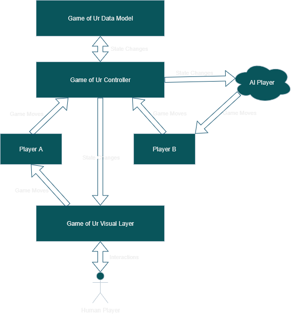

- Generated on for Game of Ur by
 1.17.0
1.17.0
|
Game of Ur 0.3.3
This is a computer adaptation of Game of Ur, written in C++ mainly using SDL and OpenGL.
|

The game of ur data model is a collection of classes and data structures responsible for representing the "real" state of a single game of Game of Ur.
The ur controller is a ToyMaker::SimObjectAspect that acts as the engine level interface between the presentation layer of the game, and the game itself (i.e., the game's data model).
At the start of a game, it instantiates two player controllers. Each player controller has methods representing game-actions each player can take. Since player controllers aren't tied to the presentation layer directly, their methods may even be called by AI, or (theoretically) even a player on another machine.
The game data model represents the state and logic of a game independently of its presentation to the user, its platform, or even the engine. This makes it simple to adapt the game to different platforms, to add the ability to play the game in multiplayer, or even to just reason about the logic of the game itself.
The game controller provides the interface between the presentation layer of the game and the game data model. This allows the game to be played even by players who do not require a UI, such as AI or online players.
It also makes it so that the presentation later is somewhat modular; any interface that results in player controller methods being called, and capable of receiving and displaying game state changes, is a valid presentation layer. The controller and data model aren't concerned with the source of game actions.